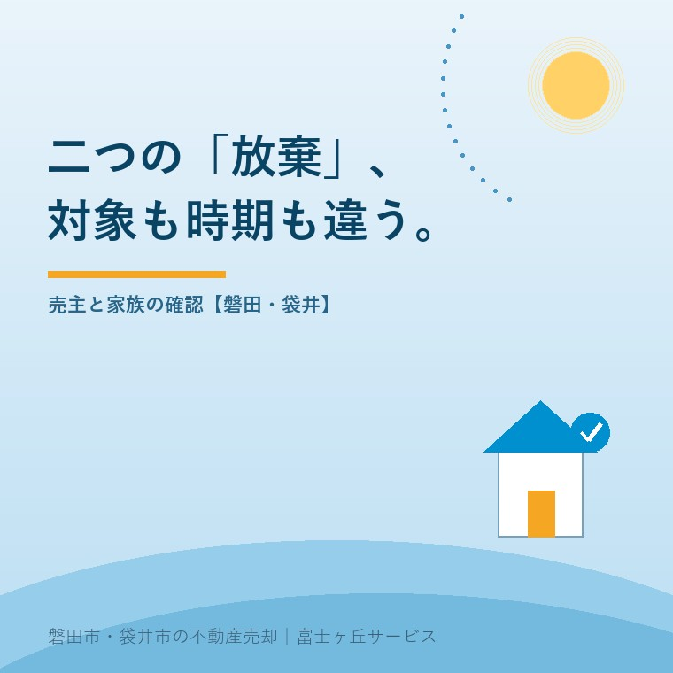
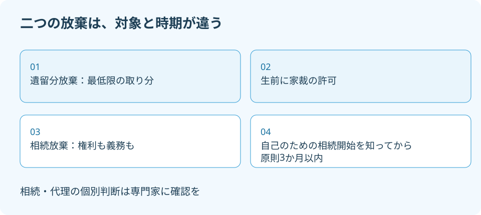

遺留分放棄と相続放棄の違い、承継前の3点
2026年9月28日｜カテゴリ：相続・しまい方

この記事の要点
親が元気なうちに相続放棄の約束をすれば、実家は一人に渡せる？
生前の遺留分放棄と、相続開始後の相続放棄は別です。放棄する対象、手続時期、申立人を分け、家族の口約束を手続完了と扱わないでください。磐田市・袋井市では、介護施設の運営から不動産事業を始めた富士ヶ丘サービスのような会社で実家の資料を整理し、相続の個別判断は専門家に確認を。
大石浩之（磐田市／不動産業）です。「実家は長男へ。ほかの子は放棄する」。家族の方針を短く書くと、肝心の中身が抜けることがあります。放棄するのは最低限の取り分なのか、相続そのものなのか。宅地建物取引士として売却や承継の段取りを見ると、この違いを曖昧にしたまま家の行き先は決められません。
最高裁判所の令和7年司法統計年報には、遺留分の放棄についての許可の新受が694件と載っています。制度の名前が似ていても、相続放棄とは別の手続です。裁判所の手続案内と統計を2026年9月28日に確認し、親が存命の家族が整理したい3点に絞って説明します。
放棄する対象・時期・本人を比べる
遺留分放棄と相続放棄の違いは、対象、時期、手続をする本人です。遺留分は一定の相続人に法律上保障される最低限の取り分を指します。裁判所の案内では、生前の遺留分放棄は家庭裁判所の許可を受ける手続です。相続放棄は、相続による権利・義務を一切受け継がない手続です。
| 比較する3点 | 生前の遺留分放棄 | 相続放棄 |
|---|---|---|
| 対象 | 保障された最低限の取り分 | 相続による権利・義務のすべて |
| 時期 | 被相続人が生存中 | 自己のための相続開始を知ってから原則3か月以内 |
| 本人と手続 | 遺留分を有する相続人が家裁へ許可を申し立てる | 相続人が家裁へ放棄を申述する |
被相続人とは、財産を残して亡くなる人のことです。生前の準備でも、この言葉を使って手続を説明します。「家を受け取る予定の子が申し込めば、兄弟全員が放棄したことになる」という仕組みではありません。誰の取り分や立場を変える話かを先に確認します。
遺留分を放棄しても、それだけで相続放棄と同じ効果になるわけではありません。親の借金を受け継がないための手続が済んだ、と読み替えないでください。家を受け取らないという希望と、債務を含めて相続しないという判断は、専門家に別々に説明する必要があります。

遺留分放棄の新受694件を読み違えない
最高裁判所「令和7年司法統計年報・家事編」の第2表・第3表では、2025年の「遺留分の放棄についての許可」の新受は694件です。第3表の受理総数780件は、旧受86件と新受694件を合わせた数字です。694件を許可された件数とは表現できません。
件数の見出しには「許可」という言葉が含まれます。しかし、事件の名前と、許可という結論に至った数は別です。私は、この違いを飛ばして「694件も認められたから大丈夫」と家族に伝えるのは避けます。自分の家族で許可されるか、必要な手続なのかは統計からは分かりません。
裁判所の遺留分放棄の案内では、申立先は被相続人の住所地の家庭裁判所です。必要な費用として収入印紙800円分と連絡用の郵便料が示されています。郵便料は裁判所ごとに確認します。800円を、専門家への依頼費用まで含む総額とは扱いません。
私は、制度の良い点は、生前に家族の承継を考えるための正式な手続が用意されていることだと考えます。単に家族の間で念書を回すだけでなく、家庭裁判所の許可を得る仕組みです。本人の判断に関わる問題を、家を継ぐ人の説明だけで終わらせない入口になります。
その上で、手続があることを「放棄してもらえば解決」の合図にしないでほしい。これが私の注文です。費用の一部が800円だから軽い判断、とはなりません。将来どんな権利を持つかに関わるので、家族の生活費や他の財産まで確認したうえで考える話です。
生前の約束だけで実家の承継は完成しない
親が生きている間の「相続は要らない」という口約束を、相続放棄の申述が終わったこととは扱えません。裁判所は、相続放棄を相続開始後の選択肢として説明しています。生前に遺留分の放棄を考える場合も、家庭裁判所の許可が必要です。
実家を誰に渡したいかという親の希望と、ほかの家族がどの権利を放棄するかは、別の欄に書きます。遺留分放棄だけで、実家の名義が特定の人へ移るとは考えません。遺言などを含む承継方法の設計は、財産全体を示して専門家と確認します。
例えば、親は「実家を残してほしい」、子は「売って施設費に充ててほしい」と考えている可能性があります。ここで先に放棄の書類を用意しても、家をどう使うかは一致していません。私は、希望の違いを出す作業を、手続書類へ署名する作業より前に置くことを勧めます。
遺言の実行を誰が担うかは、遺言執行者と不動産売却で整理しています。ただし、執行する人を決める話と、家族の権利を放棄する話も別です。書類の名前がそろっただけで承継が完成したと考えず、つながりを確認してください。相続・登記の個別判断は専門家に確認を。
書類へ書く前に本人の希望を分ける
遺留分放棄を相談する際は、放棄を考える本人の希望と、家を継ぐ人の希望を分けて伝えます。家族の全員が同じ結論だと決めつけず、本人が何を理解し、何をまだ判断できていないかを記録する準備です。
家を継ぐ人の都合だけで、ほかの家族に放棄を急がせない。私はこう考えます。不動産屋から見れば名義が整理されると売却の段取りは組みやすくなります。でも、売りやすい形を作るために家族の権利を先に削る案内は、順番が違います。本人が選ぶための材料をそろえるのが先です。
私も、遺留分放棄が適切かどうかを家の査定額だけでは判断できません。家以外の預貯金、借入れ、今後の介護費、家を継ぐ人の負担によって、家族が心配している内容は変わるからです。売れる金額が分かっても、それは承継の判断材料の一つにすぎません。
親が亡くなった後の相続放棄では、時間の扱いも変わります。裁判所は、自分のために相続が始まったと知ってから3か月以内の申述を案内しています。迷う自由を残すことと、期限を見ずに待つことは同じではありません。判断が難しいなら、期限の起算点や期間伸長の相談を先にします。
財産と借金の範囲が不明な場合は、限定承認と相続放棄の違いも別の検討事項です。放棄後の家の扱いについては相続放棄後の管理を確認する記事も参照できます。今回は生前の遺留分放棄との比較に絞り、個別の選択は専門家へつなぎます。
磐田・袋井の実家は家と負担を一枚にする
磐田市・袋井市の実家を一人に継がせる案では、所在地と名義だけでなく、家族が想定する負担も一枚にまとめます。家が磐田市にあることと、申立先を決める住所の条件は別です。生前の遺留分放棄は被相続人の住所地、相続放棄は最後の住所地の家庭裁判所を確認します。
相談用の紙は、結論を書いた同意書ではありません。「家を取得する希望」「家の維持を担える人」「分かっている借入れ」「専門家に聞きたいこと」に欄を分けます。金額が不明なら空欄を残してください。親の希望を子の推測で埋めたり、知らない債務をゼロと書いたりしないためです。
今日できることは、家族が使った「放棄」という言葉の横に、何を放棄するつもりかを書き足すことです。最低限の取り分なのか、家だけを受け取らない話なのか、権利も義務も受け継がない話なのか。言葉をほどくだけで、次に専門家へ尋ねる内容が具体的になります。
富士ヶ丘サービスは、介護と不動産を一体で相談できる窓口として、磐田・袋井の家の条件を整理します。家族が困らない売却には、家の価格だけでなく、誰の意思で進めるかの確認が欠かせません。私は、承継方法を決める前の資料整理から案内します。相続の個別判断は専門家に確認を。
- 放棄する対象・時期・本人を別々に確認する。
- 694件は新受件数であり、許可件数と読み替えない。
- 家族の希望と財産・債務の資料をそろえて相談する。
よくある質問
二つの放棄を区別し、具体的な承継方法は専門家へ確認します。
- 遺留分を放棄すれば、親の借金も引き継がずに済みますか？
- 遺留分放棄は、法律で保障された最低限の取り分に関する手続です。相続人として権利・義務を一切受け継がない相続放棄とは異なります。遺留分を放棄したことだけで、借金も引き継がないと判断しないでください。親の財産と債務、遺言の内容、本人の意向をそろえ、具体的な相続関係は弁護士などの専門家に確認を。
- 親が子どもの代わりに遺留分放棄を申し立てられますか？
- 裁判所の案内では、遺留分放棄の申立人は遺留分を有する相続人です。財産を残す親や実家を継ぐ予定の人が、ほかの家族の放棄を自分の希望だけで決める手続ではありません。申立先は被相続人の住所地の家庭裁判所です。未成年者や代理の問題がある場合も、一般論で進めず専門家に確認してください。
- 相続放棄の3か月は、必ず死亡日から数えるのですか？
- 裁判所の案内は「自己のために相続の開始があったことを知ったときから3か月以内」としています。死亡日だけで機械的に期限を決める説明ではありません。亡くなった日、知らせを受けた日、自分が相続人になったと知った日を記録し、期間の起算点や伸長の必要性を家庭裁判所や専門家へ早めに確認してください。

この記事を書いた人：大石浩之（磐田市／不動産業・宅地建物取引士）
富士ヶ丘サービス株式会社。介護施設の運営から不動産事業を始め、磐田市・袋井市・森町で、介護と相続、実家の売却を一体で相談できる窓口を設けています。家族が困らない売却のため、資料と現地の条件を一件ずつ整理します。著者プロフィール
本記事は2026年9月28日時点の公開情報と筆者の意見です。制度・数値・手続きは変更されることがあります。個別の税務・登記・相続・代理の判断は、税理士・司法書士・弁護士などの専門家に確認を。